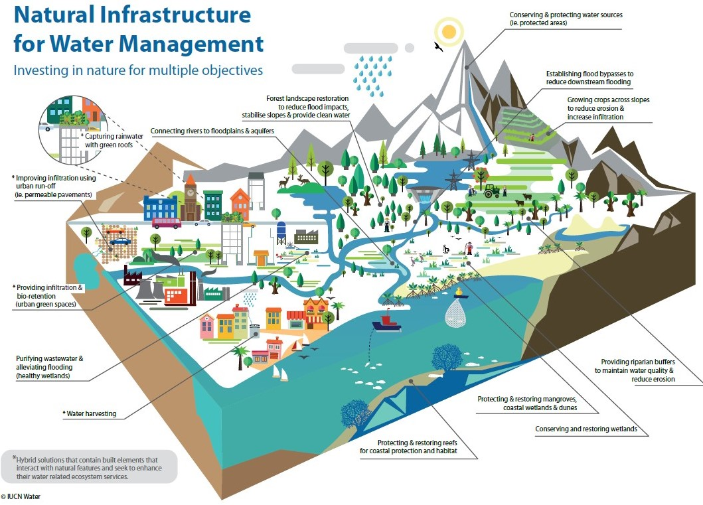
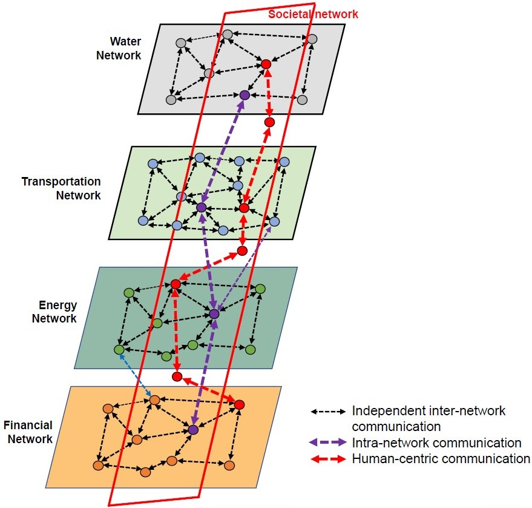
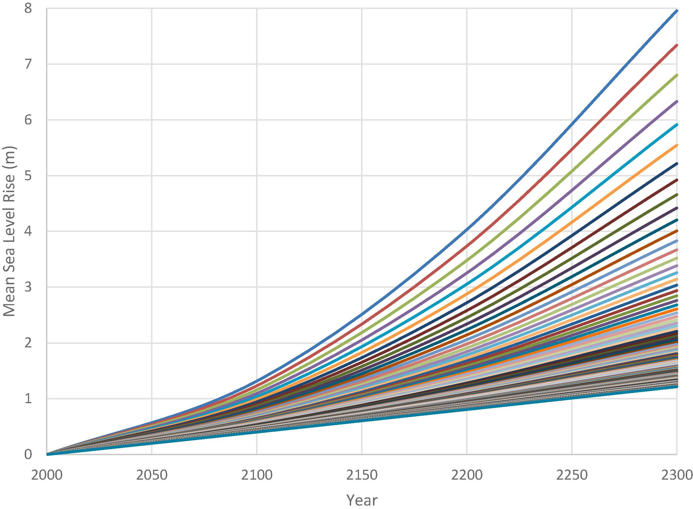
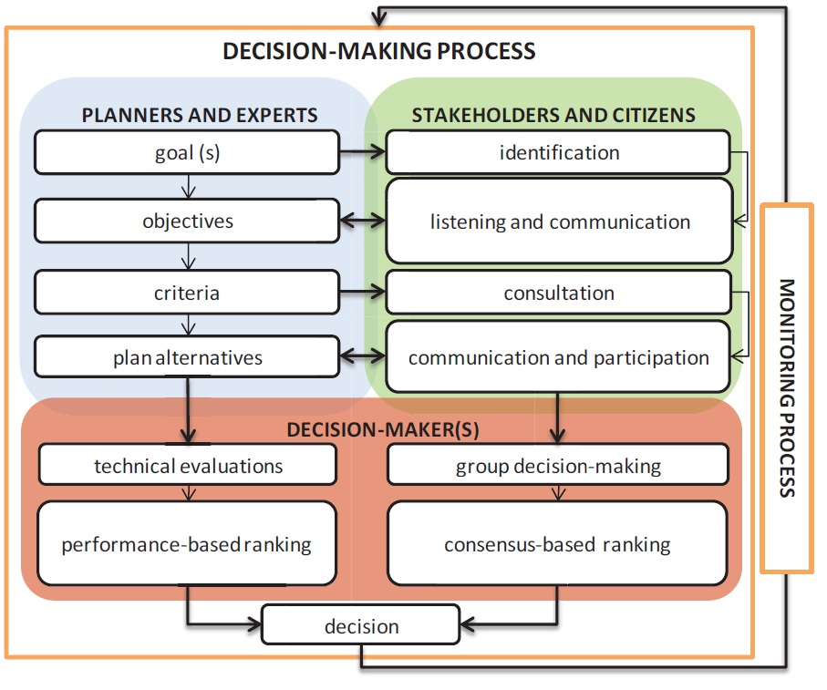

In this mini-lecture we will describe the main considerations and challenges of making decisions for infrastructure planning.
Following previous lectures, we are already able to:
Therefore, in this lecture we will set the basis for decision-making on evaluating what strategies perform better under future forecasts to achieve our defined goals.
The lack of strategic long-term planning is seen as one of the main challenges to overhauling infrastructure systems (Anheier, Lorentz, and Fratzscher 2016; OECD 2017). However, making the right decisions about infrastructure is not an easy task. Infrastructure, as a high-cost long-lived asset, needs to take into account a variety of factors, scenarios, objectives, stakeholders and interdependencies with other sectors.
Infrastructure systems don’t only provide basic needs, they also facilitate economic growth and social well-being. Additionally, these systems account for approximately 70% of global emissions, mainly as a result of infrastructure construction and operations such as power plants, buildings, and transport (Saha 2018). Therefore, making decisions about infrastructure today, needs to take into account a variety of different aspects and goals, as described in Lecture 5.
Figure 7.1.1 shows how water infrastructure (in this case natural infrastructure) can provide a variety of services such as environmental protection, flood mitigation, reducing erosion and water supply. Infrastructure impacts are broad, therefore it is common to take multiple goals in the decision-making process.

Figure 7.1.1: Natural infrastructure for multiple objectives (Cohen-Shacham et al. 2016)
Common multiple objectives are costs, emissions (mainly for energy and transport), reliability of the service, access (mainly for water and wastewater in low-income settings), air and water quality, and other environmental impacts. One way of taking all these different metrics into account, is by converting them into monetary values. However, for planning purposes other methodologies might be preferred, such as multi-criteria decision-making, in which every metric can be analysed with its own value, and trade-off evaluations can be performed. One of the most prominent examples in this regard is energy planning under the Sustainable Development Goals (SDGs) and the Paris Agreement, in which planners are expected to consider climate mitigation objectives while developing a reliable and cost effective energy system (Bhardwaj et al. 2019).
Each infrastructure sector is a multifaceted socio-technical system, that contains a complex web of interconnections. Given the increased recognition of the need to take a more integrated view of infrastructure, many studies have evaluated infrastructure networks by analysing interdependencies between sectors such as the expanding body of research on the water-energy nexus (Hamiche, Stambouli, and Flazi 2016; Artioli, Acuto, and McArthur 2017). An example of interdependent infrastructure networks is shown in Figure 7.1.2. In the figure you can see schematic interactions between infrastructure sectors and with societal and financial networks. The interactions are differentiated as intra-network (within the same sector), inter-network and human-centric communication.

Figure 7.1.2: Interdependent infrastructure systems (Amini, Imteaj, and Pardalos 2020)
Some system interdependencies can be found between the energy and water sectors, mainly through hydropower plants (which generate water and energy at the same time), and the important amount of energy needed for water treatment and desalination. Interdependencies between the energy and transportation sectors are the fossil fuels used for vehicles and the increasing electrification of transport. Finally, interdependencies between waste and energy are the so-called waste-to-energy projects such as incinerators or anaerobic digesters as well as the methane collection in landfills. Some direct interdependencies between sectors were described, but it is important to identify other types of indirect dependencies. For instance, if infrastructure is planned centrally, one common budget might be distributed for different sectors, therefore the budget spent in one sector might affect another. On the demand side, a demand-management strategy such as increasing environmental awareness can have an impact on all sectors and can be considered a cross-sectoral intervention.
As seen in Lecture 4, infrastructure drivers are used to predict future demand. However, the longer the planning timeframe, the more uncertain the forecasts. A common question that arises when we have a broad range of scenarios is what we can do with them? Figure 7.1.3 shows the huge variation of expected sea level rise (between 1m to 8m) for the Thames river in London.

Figure 7.1.3: Different forecasts of sea level rise for London (Hall, Harvey, and Manning 2019)
When facing that range of uncertainty, different approaches are commonly used:
Given that infrastructure is costly and its impacts are widespread, infrastructure decisions are usually taken by a group of stakeholders. This is part of what is called infrastructure governance, which entails the social and institutional factors that create and sustain infrastructure relationships (Turner 2018). Uncertainty on what decision is better arises when there are many viable alternatives to follow, when the problem depends upon people’s unpredictable behaviour, and the uncertainty of the decision-making process itself, where various stakeholders with different worldviews do not agree on a strategy (Groves and Lempert 2007).
The multiplicity of stakeholders does not only affect the moment of making final decisions on infrastructure planning. The variety and sometimes conflicting opinions need to be accounted for from the framing of the problem, the development of a vision and objectives, and the metrics that should be used. This will lead to consensus-based decision-making. Figure 7.1.4 exemplifies a participatory decision-making process proposed for transportation planning. As evident in the figure, this entails a complex and iterative process.

Figure 7.1.4: A framework for the participatory decision-making process (Pira et al. 2015)
In this mini-lecture we reviewed key considerations for infrastructure decision-making. Infrastructure normally has multiple objectives, interdependencies, future uncertainty and multiple stakeholders involved. Making infrastructure decisions is therefore a complex process.